Candidate List 20260713Last night — ZTF: 741 passed basic cuts (19 young) · LSST: 2,369 passed basic cuts (340 young)Previous Day Next Day
Section 1: New Sources (age<1d) Section 2: Old (1-5d) sources observed last nightplaceholder
Section 1: New Afterglow/FBOT Cands Last Night (1)
1. [ZTF] ZTF26abgrzug (Afterglow?) [Back to Top] [Share] [Trigger Swift] [Fritz Alert] [Fritz Source] [Lasair]RA, Dec: 4.35359, 0.39534 0h17m24.86s, 0d23m43.23sGalactic (l, b): 105.00144, -61.28633 WARNING: -1.37 deg from ecliptic plane ext(g-r) = 0.025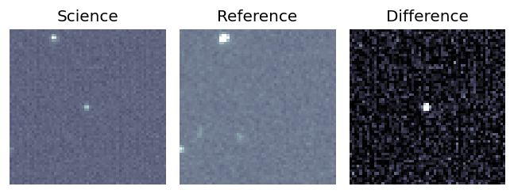
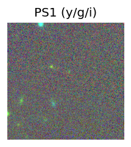
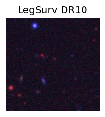
TESS: Sectors [42 43 70]
PS1: 0 sources in 3 arcsec
LegacySurvey: 1 sources in 3 arcsec Closest: d = 4.28 arcsec, 342.8 deg (east of north) photoz=0.79 (68% bounds 0.74, 0.84), type=REX peak abs mag = -24.15 (68% bounds -23.99, -24.32)
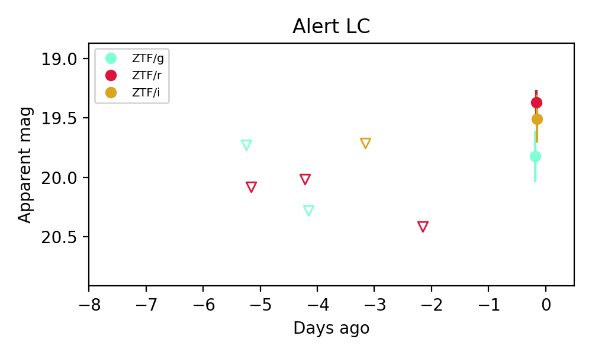
Extinction-corrected gr color:
From alerts: 0.43 +/- 0.24 mag
Extinction-corrected gi color:
From alerts: 0.28 +/- 0.3 mag
Extinction-corrected ri color:
From alerts: -0.15 +/- 0.23 mag
Consistent with synchrotron, g-r>0!
Rise Rate:
g: 0.11 mag/day
r: 0.52 mag/day
Fade Rate:
Section 2: Older Sources Observed Last Night (6)
0. [LSST] 170631083058004535 (Afterglow?) [Back to Top] [Fritz Alert] [Fritz Source] [Lasair]RA, Dec: 289.41908, -18.19044 19h17m40.58s, -18d-11m-25.57sGalactic (l, b): 19.33101, -13.82373 WARNING: 4.01 deg from ecliptic plane ext(g-r) = 0.131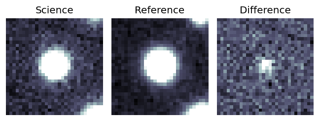
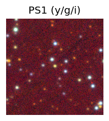

TESS: Sectors [ 92 116]
PS1: 0 sources in 3 arcsec
LegacySurvey: 0 sources in 3 arcsec
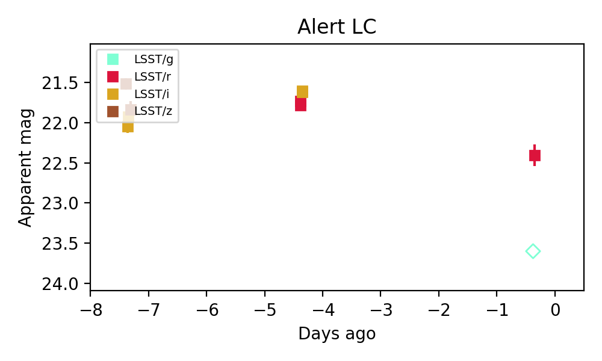
Extinction-corrected gr color:
From alerts: 1.06 +/- 99 mag
Extinction-corrected ri color:
From alerts: 0.07 +/- 0.04 mag
Extinction-corrected iz color:
From alerts: 0.31 +/- 0.08 mag
Consistent with synchrotron, g-r>0!
Rise Rate:
i: 0.12 mag/day
Fade Rate:
r: 0.16 mag/day
z: 3.86 mag/day
1. [LSST] 170631083058529218 (Afterglow?) [Back to Top] [Fritz Alert] [Fritz Source] [Lasair]RA, Dec: 288.86239, -18.06225 19h15m26.97s, -18d-3m-44.10sGalactic (l, b): 19.22536, -13.28914 WARNING: 4.21 deg from ecliptic plane ext(g-r) = 0.137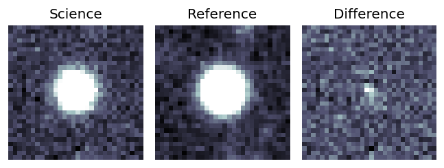
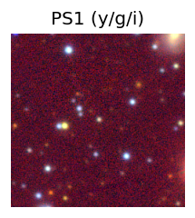

TESS: Sectors [ 92 116]
PS1: 0 sources in 3 arcsec
LegacySurvey: 0 sources in 3 arcsec
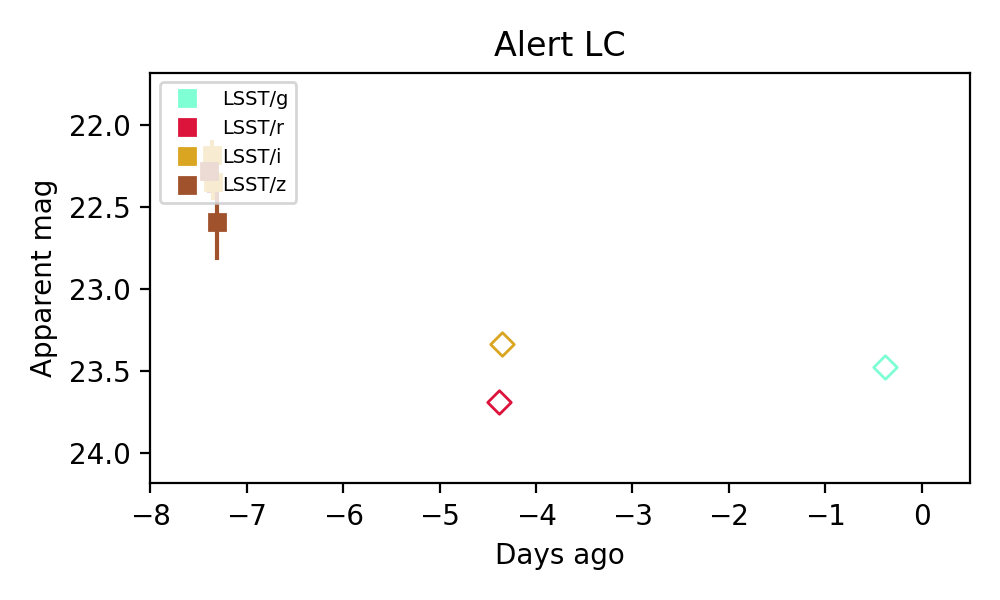
Extinction-corrected iz color:
From alerts: -0.17 +/- 0.14 mag
Rise Rate:
Fade Rate:
i: 0.39 mag/day
2. [ZTF] ZTF26abfosdk (Afterglow?) [Back to Top] [Share] [Trigger Swift] [Fritz Alert] [Fritz Source] [Lasair]RA, Dec: 319.07249, 4.96533 21h16m17.40s, 4d57m55.21sGalactic (l, b): 56.18622, -28.97023 ext(g-r) = 0.123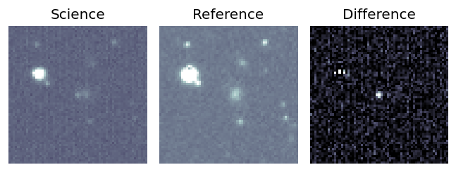
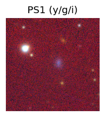
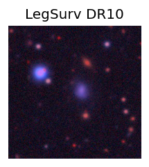
TESS: Sectors [55 82]
SDSS (<15 kpc):Found SDSS phot-z: z=0.04; peak abs mag = -17.64
PS1: 0 sources in 3 arcsec
LegacySurvey: 1 sources in 3 arcsec Closest: d = 3.53 arcsec, 279.6 deg (east of north) photoz=0.03 (68% bounds 0.02, 0.05), type=SER peak abs mag = -16.95 (68% bounds -15.99, -17.92)
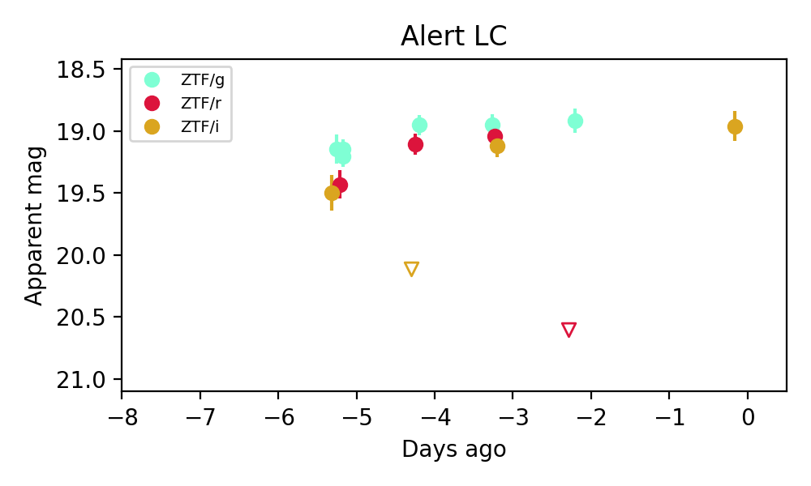
Extinction-corrected gr color:
From alerts: -1.81 +/- 99 mag
Extinction-corrected gi color:
From alerts: -0.37 +/- 0.12 mag
Extinction-corrected ri color:
From alerts: -0.15 +/- 0.12 mag
Rise Rate:
g: 0.09 mag/day
r: 0.18 mag/day
i: 0.9 mag/day
Fade Rate:
r: 1.66 mag/day
i: 0.6 mag/day
3. [ZTF] ZTF26abfxxqc (Afterglow?FBOT?) [Back to Top] [Share] [Trigger Swift] [Fritz Alert] [Fritz Source] [Lasair]RA, Dec: 47.40792, 36.84173 3h 9m37.90s, 36d50m30.24sGalactic (l, b): 151.48021, -18.25424 ext(g-r) = 0.299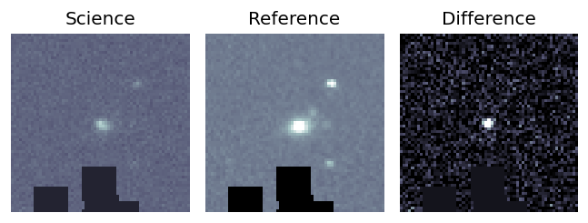
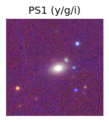

TESS: Sectors [18 58 85]
NED (10 arcsec):Found NED spec-z: z=0.07; peak abs mag = -19.92
PS1: 1 source in 3 arcsec Closest: d = 2.10 arcsec photoz=0.06+/-0.00 peak abs mag = -19.51
LegacySurvey: 0 sources in 3 arcsec
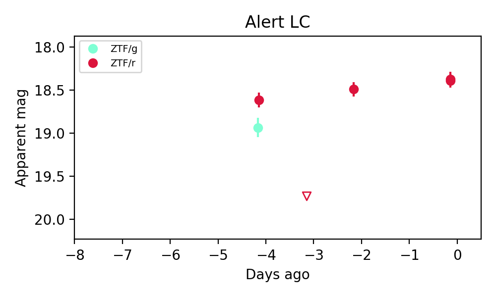
Extinction-corrected gr color:
From alerts: 0.02 +/- 0.14 mag
Consistent with synchrotron, g-r>0!
Rise Rate:
r: 1.26 mag/day
Fade Rate:
r: 1.12 mag/day
4. [ZTF] ZTF26abgbmbs (Afterglow?) [Back to Top] [Share] [Trigger Swift] [Fritz Alert] [Fritz Source] [Lasair]RA, Dec: 330.83604, 39.74483 22h 3m20.65s, 39d44m41.37sGalactic (l, b): 91.11074, -12.52191 ext(g-r) = 0.217


TESS: Sectors [ 15 16 83 121]
PS1: 1 source in 3 arcsec Closest: d = 4.85 arcsec photoz=0.62+/-4.91 peak abs mag = -26.48
LegacySurvey: 0 sources in 3 arcsec

Extinction-corrected gr color:
From alerts: 0.02 +/- 0.18 mag
Consistent with synchrotron, g-r>0!
Rise Rate:
g: 1.18 mag/day
r: 3.07 mag/day
Fade Rate:
5. [ZTF] ZTF18adldlxx (Afterglow?) [Back to Top] [Share] [Trigger Swift] [Fritz Alert] [Fritz Source] [Lasair]RA, Dec: 325.70641, 30.36324 21h42m49.54s, 30d21m47.67sGalactic (l, b): 81.52687, -16.9612 ext(g-r) = 0.133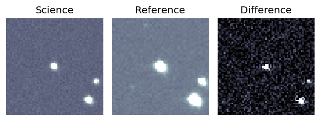
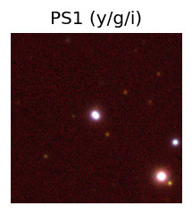
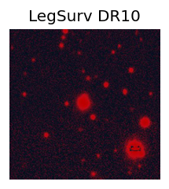
TESS: Sectors [ 15 56 82 83 121]
PS1: 0 sources in 3 arcsec
LegacySurvey: 0 sources in 3 arcsec
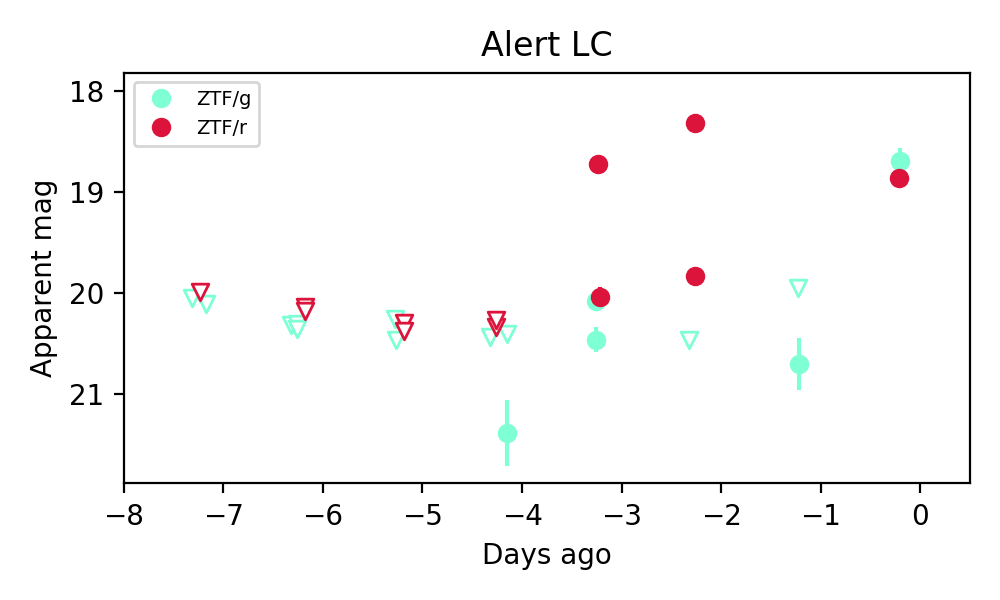
Extinction-corrected gr color:
From alerts: -0.3 +/- 0.12 mag
Rise Rate:
g: 1.23 mag/day
r: 1.58 mag/day
Fade Rate:
g: 0.42 mag/day
r: 0.1 mag/day